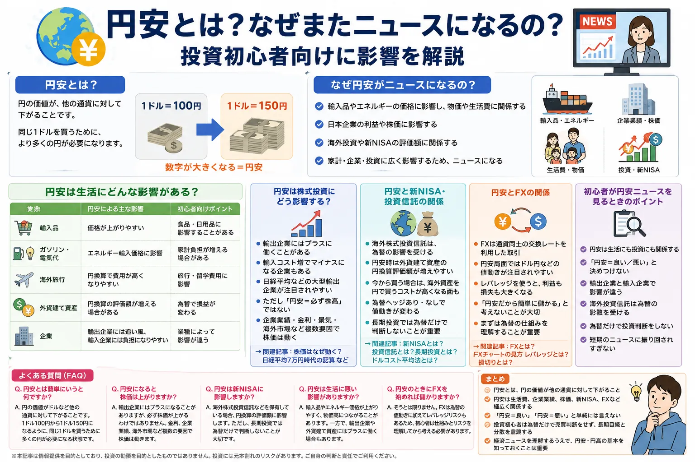

Meaning
円安とは？まずは意味をやさしく解説
円安とは、円の価値がドルやユーロなど他の通貨に対して下がることです。たとえば「1ドル＝100円」から「1ドル＝150円」になると、同じ1ドルを買うために、より多くの円が必要になります。
ポイント：「1ドル＝100円 → 1ドル＝150円」は、円の価値が下がった状態です。ドル円では、数字が大きくなるほど円安と覚えると分かりやすいです。
円安
円の価値が下がる
同じ外貨を買うために、より多くの円が必要になります。海外の商品や旅行代金を円で考えると高く感じやすくなります。
円高
円の価値が上がる
同じ外貨を買うために必要な円が少なくなります。海外のものを買うときや海外旅行では有利に働く場合があります。
News
なぜ円安がニュースになるの？
為替は、生活・企業業績・投資に広く関係します。円安が進むと、輸入品やエネルギー価格、海外旅行費用、企業の利益、海外投資の評価額などに影響が出やすいため、ニュースで大きく扱われます。
家計に関係する
日本はエネルギーや食料の一部を海外から輸入しています。円安になると、輸入品の円換算コストが上がりやすく、物価高の一因になることがあります。
企業業績に関係する
輸出企業には追い風になる場合がありますが、原材料や商品を輸入する企業には負担になる場合があります。業種によって影響が違います。
投資に関係する
海外株式投資信託や外貨建て資産を持っている場合、為替の変動で円換算の評価額が変わります。新NISAでも無関係ではありません。
Reason
円安になる主な理由
為替はひとつの理由だけで動くわけではありません。初心者はまず「お金は金利の高い方へ流れやすい」「輸入が多いと外貨を買う場面が増える」「市場心理で通貨が買われたり売られたりする」と考えると整理しやすいです。
日本と海外の金利差
米国など海外の金利が高いと、より高い利回りを求めてドルなどが買われやすくなります。一方、日本の金利が低いと、円が売られやすくなることがあります。
貿易収支やエネルギー輸入
原油・天然ガス・食料などを海外から買うときは、円を外貨に交換する場面があります。輸入コストが増えると、円安と物価高が結びついて語られやすくなります。
投資家心理と金融政策への見方
投資家が「この国の通貨を持ちたい」と考えるかどうかも為替に影響します。中央銀行の金融政策、景気、財政、地政学リスクなどへの見方も通貨の売買材料になります。
Life
円安は生活にどんな影響がある？
円安の影響は、買い物・光熱費・旅行・資産評価など、身近なところにも出ます。良い面と悪い面を分けて見ることが大切です。
| 対象 | 円安による主な影響 | 初心者向けポイント |
|---|---|---|
| 輸入品 | 価格が上がりやすい | 食品・日用品に影響することがあります |
| ガソリン・電気代 | エネルギー輸入価格に影響 | 家計負担が増える場合があります |
| 海外旅行 | 円換算で費用が高くなりやすい | 旅行・留学費用に影響します |
| 外貨建て資産 | 円換算の評価額が増える場合がある | 為替で損益が変わります |
| 企業 | 輸出企業には追い風、輸入企業には負担になりやすい | 業種によって影響が違います |
※ 横にスクロールできます
Stock
円安は株式投資にどう影響する？
円安は、輸出企業にはプラスに働くことがあります。海外で稼いだ売上や利益を円に換算したとき、円安によって数字が大きく見えやすいためです。一方で、原材料や商品を輸入する企業にとっては、仕入れコスト増につながる場合があります。
プラスになりやすい例
海外売上が大きい企業
輸出企業や海外比率の高い企業では、円安が業績の追い風として見られることがあります。
負担になりやすい例
輸入コストが大きい企業
原材料・燃料・海外商品を仕入れる企業では、コスト増が利益を圧迫する場合があります。
注意点
円安＝必ず株高ではない
株価は企業業績、金利、景気、海外市場、投資家心理など複数の要因で動きます。為替だけで判断するのは危険です。
NISA / Fund
円安と新NISA・投資信託の関係
新NISAで海外株式投資信託などを買っている場合、為替の影響を受けます。円安時は、すでに持っている外貨建て資産の円換算評価額が増えやすい一方、これから海外資産を円で買う場合は、外貨を買うコストが高くなる面もあります。
保有中の海外資産
円安になると、外貨建て資産を円に換算した評価額が増える場合があります。ただし、資産価格そのものが下がれば評価額も下がる可能性があります。
これから買う場合
同じ外貨建て資産を買うにも、円安時は円ベースの購入コストが高くなりやすいです。焦って一括で買う必要があるとは限りません。
為替ヘッジ
為替ヘッジありの商品は為替変動の影響を抑えることを目指しますが、コストや仕組みがあります。ヘッジなしは為替の影響を受けやすくなります。
長期投資では、為替だけで判断しないことが重要です。投資対象、手数料、積立方針、リスク許容度をあわせて確認しましょう。
FX
円安とFXの関係
FXは、通貨同士の交換レートを利用した取引です。円安局面では、ドル円などの値動きが注目されやすくなります。ただし、円安だから簡単に儲かるという意味ではありません。
為替の方向を当てる取引ではない
FXでは、上がるか下がるかだけでなく、どのタイミングで入るか、どのくらい損失を許容するか、どこで撤退するかも重要です。
レバレッジで損益が大きくなる
レバレッジを使うと少ない資金で大きな取引ができますが、その分、利益も損失も大きくなります。初心者は特にリスク管理が重要です。
まずは仕組みの理解が先
「円安だから買う」「ニュースで話題だから始める」ではなく、為替の仕組み、注文方法、損切り、資金管理を理解してから考えるのが安全です。
Check Point
初心者が円安ニュースを見るときのポイント
円安ニュースを見るときは、良い・悪いの二択で判断せず、どこに影響する話なのかを分けて見ると理解しやすくなります。
- 円安は生活にも投資にも関係する
- 「円安＝良い／悪い」と決めつけない
- 輸出企業と輸入企業で影響が違う
- 海外投資信託は為替の影響を受ける
- 為替だけで投資判断をしない
- 短期のニュースに振り回されすぎない
FAQ
よくある質問
Q. 円安とは簡単にいうと何ですか？
円の価値がドルなど他の通貨に対して下がることです。1ドル100円から1ドル150円になるように、同じ1ドルを買うために多くの円が必要になる状態です。
Q. 円安になると株価は上がりますか？
輸出企業にはプラスになることがありますが、必ず株価が上がるわけではありません。金利、企業業績、海外市場など複数の要因で株価は動きます。
Q. 円安は新NISAに影響しますか？
海外株式投資信託などを保有している場合、円換算の評価額に影響します。ただし、長期投資では為替だけで判断しないことが大切です。
Q. 円安は生活に悪い影響がありますか？
輸入品やエネルギー価格が上がりやすく、物価高につながることがあります。一方で、輸出企業や外貨建て資産にはプラスに働く場合もあります。
Q. 円安のときにFXを始めれば儲かりますか？
そうとは限りません。FXは為替の値動きに加えてレバレッジリスクもあるため、初心者は仕組みとリスクを理解してから考える必要があります。
Summary
まとめ｜円安は生活・投資の両方に関係する
円安とは、円の価値が他の通貨に対して下がることです。円安は生活費、輸入品、エネルギー価格、企業業績、株価、新NISA、投資信託、FXなど幅広く関係します。
- 円安とは、円の価値が他の通貨に対して下がること
- 円安は生活費、企業業績、株価、新NISA、FXなどに関係する
- 「円安＝良い」「円安＝悪い」と単純には言えない
- 投資初心者は為替だけで売買判断をせず、長期目線と分散を意識する
- 経済ニュースを理解するうえで、円安・円高の基本を知っておくことは重要
Next Step
為替だけでなく、投資の基本もあわせて確認しよう
円安ニュースを理解できるようになると、株価・新NISA・投資信託・FXのニュースも読みやすくなります。次は、投資の基本やリスク管理もあわせて確認しておくと安心です。
ご利用にあたっての注意事項
本記事は情報提供を目的としており、投資の勧誘を目的としたものではありません。株式・投資信託・外国証券・FX等の取引は元本保証がなく、相場変動や為替変動等により損失が生じる場合があります。取引開始前に、契約締結前交付書面や商品説明書、目論見書等を必ずご確認のうえ、ご自身の判断と責任でお取引ください。